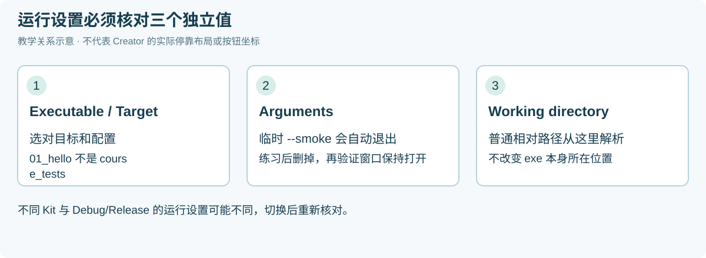
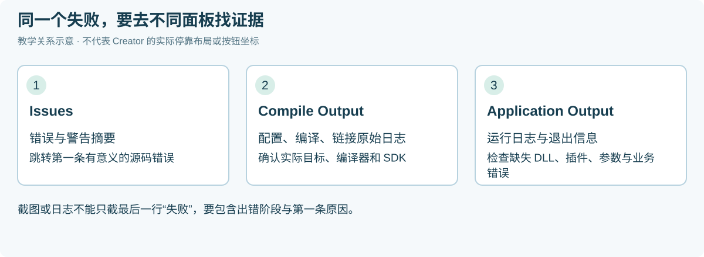

八 · Qt Creator 图形化操作实训 · 推荐路线 67 / 67
66 · Qt Creator 综合操作：运行设置、故障排查与交付
一、把运行配置和构建配置分开
Projects/项目中的 Build Settings 控制怎样构建，Run Settings 控制执行哪个程序、参数、工作目录和环境。两个配置都可能随 Kit 与 Debug/Release 改变；在 Debug 下改过的参数，不应假定 Release 一定相同。
本仓库有多个 exe。选择运行目标时确认名称，再核对实际路径。若目标 18_vulkan 没出现，先看是否启用对应 CMake 选项和头文件，不能通过手工把另一个 exe 路径改名来制造目标。
二、在界面中填写参数与环境
选择 01_hello 的 Run Settings，在 Arguments/命令行参数中临时填 --smoke，运行后程序应自动退出。清掉参数再运行，应正常保持窗口。这个小实验能证明你修改的是当前运行配置。
如遇 Qt DLL 或插件查找问题，在当前运行配置的 Environment 中添加或前置：
| 变量 | 课程值 | 作用 |
|---|---|---|
| PATH | 在已有值前加入 E:\QT\QT\sdk\6.8.3\msvc2022_64\bin |
查找当前 Qt 的 DLL，保留其余环境 |
| QT_PLUGIN_PATH | SDK 根目录下 plugins | 查找 Qt 插件 |
| QT_QPA_PLATFORM_PLUGIN_PATH | SDK 根目录下 plugins/platforms | 平台插件位置 |
| QML_IMPORT_PATH | SDK 根目录下 qml | Quick 的 QML 模块 |
根据实际错误添加必要项，不机械地把全套环境复制给所有项目。普通桌面运行不要遗留 QT_QPA_PLATFORM=offscreen，否则可能没有可交互窗口；图形 API 示例也需要适合的实际显示环境。
Working directory/工作目录影响相对文件路径。修改它不会把 exe 移动到该目录；资源路径 :/... 与普通相对磁盘路径又不同，排查“找不到文件”先确认使用哪一种。
三、看对输出面板
Issues 便于跳转错误行，Compile Output 保留完整构建命令，Application Output 显示程序日志。编辑器红线来自代码分析，不总是最新构建结论。先保存、构建，看第一条真实错误，再检查分析器的 Kit 和头文件索引。
| 现象 | 第一步检查 | 不建议的盲目操作 |
|---|---|---|
| 没有可用 Kit | Qt、编译器和设备配置 | 随意切成 MinGW |
| 找不到 Qt6Config.cmake | CMAKE_PREFIX_PATH 的 SDK 根目录 | 把 Creator bin 当 Qt SDK |
| .ui 改了但无效果 | 保存、AUTOUIC、目标与构建目录 | 修改生成的 ui_*.h |
| 点击一次执行两次 | 自动槽与显式连接是否重复 | 不看连接就加计时防抖 |
| 新文件没有编译 | CMake 是否列入正确 target | 只看项目树有没有文件 |
| 程序一闪而过 | 参数是否有 --smoke，输出是否有错误 | 无条件重装 Qt |
| 调试按钮不可用 | CDB、Kit、Debug 配置和目标 | 以为所有 C++ 编译器都自带兼容调试器 |
四、CMake 选项的图形化编辑
在 Build Settings 中查找 Initial/Current Configuration 等 CMake 配置表。调整 COURSE_BUILD_OPENGL、COURSE_BUILD_VULKAN 等 bool 项后，执行 Run CMake/重新配置，再构建新增目标。参数值的变化与真实 configure 是否成功要分别检查。
改变编译器、生成器或架构时使用新构建目录，不在旧 CMakeCache 上反复覆盖。首次配置与当前缓存两处值可能不同，检查最终生效值和配置输出，不只看输入框里曾经填过什么。
五、交付与 Git 面板的边界
Creator 的 Git 面板可以查看差异、暂存与提交。练习先只查看自己的 .cpp/.h/.ui 修改，不把 Qt SDK、build、个人用户配置或真实数据加入仓库。提交前逐文件审阅，自动生成文件不因为 IDE 显示它就应该提交。
运行按钮执行的是开发构建，不自动生成给别人的完整分发包。交付仍按第 40 章部署依赖并做独立运行检查；本专题不把打开 Git 面板或点 Run 当作已发布到 GitHub。
最终实操验收
从关闭 IDE 开始，重新打开练习 CMakeLists，选对 Kit 和 Debug，打开 .ui 改一个展示文字，构建运行，提交空值和有效值，用清空按钮操作；再调试停在自己的槽函数。最后指出 .ui 的设计连接、.cpp 的业务逻辑、构建目录和用户配置分别在哪。
把每一步的实际结果写入学习日志。菜单与面板已按官方文档及本机版本信息编写，具体拖拽、Kit 和 CDB 操作仍需在你的当前工作区逐项完成，不冒充所有 GUI 流程都已自动验证。
参考：运行配置、CMake 项目设置。
配图逐项讲解
真实截图保持原始内容；图旁说明区分“当前默认状态”“课程目标值”和“故障反例”。示意图用于讲解关系，不代表已经完成的本机操作。可通过每幅图下的原图链接放大查看。
图 66-1 · 运行设置必须核对三个独立值
教学示意图 · 非实机截图


- 看哪里：按图中 1、2、3 的关系理解该功能。
- 怎样操作：01_hello 不是 course_tests；练习后删掉，再验证窗口保持打开；不改变 exe 本身所在位置。
- 结果与检查：不同 Kit 与 Debug/Release 的运行设置可能不同，切换后重新核对。
图 66-2 · 同一个失败，要去不同面板找证据
教学示意图 · 非实机截图


- 看哪里：按图中 1、2、3 的关系理解该功能。
- 怎样操作：跳转第一条有意义的源码错误；确认实际目标、编译器和 SDK；检查缺失 DLL、插件、参数与业务错误。
- 结果与检查：截图或日志不能只截最后一行“失败”，要包含出错阶段与第一条原因。